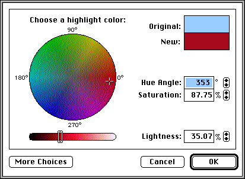
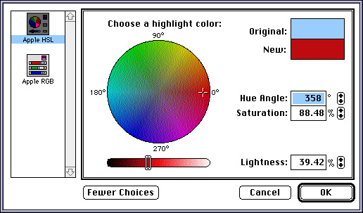
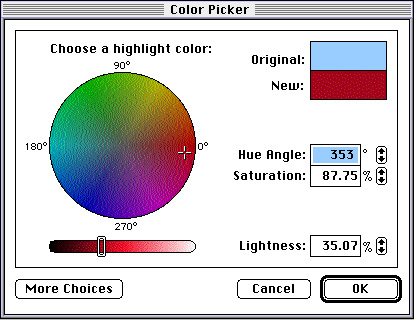

Legacy Document
Important: The information in this document is obsolete and should not be used for new development.
Important: The information in this document is obsolete and should not be used for new development.


Color Picker Dialog Boxes
If your application uses the standard dialog box for color pickers, your application's interaction with the Color Picker Manager is straightforward: your application calls thePickColorfunction, and the Color Picker Manager presents a standard dialog box to the user, as shown in Figure 2-1. (The older Color Picker Package functionGetColoralso displays this dialog box.)Figure 2-1 The standard dialog box for color pickers
 If the user clicks the More Choices button in this dialog box, the Color Picker Manager displays in a scrolling list all available color pickers, as shown in Figure 2-2.
Figure 2-2 Color picker choices in the standard dialog box for color pickers
 The user manipulates the controls in this dialog box to select a color. When the user is satisfied with a color and clicks the OK button,
PickColorreturns the selected color to your application and closes the dialog box. ThePickColorfunction also closes the dialog box when the user clicks the Cancel button.By using low-level Color Picker Manager functions, your application can use moveable modal or modeless dialog boxes instead of the modal dialog box displayed by
PickColor. Figure 2-3 shows a moveable modal dialog box for color pickers.Figure 2-3 A movable modal dialog box for color pickers
